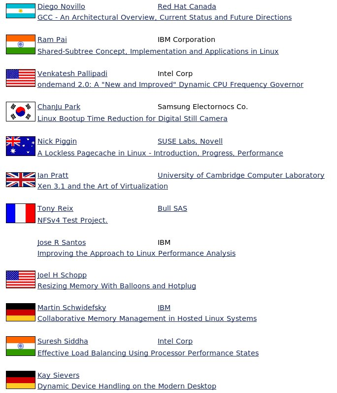

A portion of the speaker list for the 2006 Linux Kernel Symposium the author attended. Linux kernel development is a distributed effort, which greatly enhances its perspective.
Every 20th century management book I've read assumes that team members work in the same building and speak the same language. Microsoft's corporate culture was based on the theory that software development was a collaborative effort that should be centralized so that people could work together. As a result, most Microsofties, especially the programmers, were based in Redmond because that was where all the other engineers were located.
Microsoft had a very open development model inside the company: developers would periodically switch teams, collaborate freely together on unreleased code, and join e-mail discussion groups with engineers in similar product roles. These resources of collaboration are some of the many which are unavailable to those outside.
A software program is basically a bunch of human-readable text files, compiled together into a machine-specific binary. When just one person is working on the codebase, things are easy to manage, but when you have multiple people, you need three more tools:
A source control system which records all changes, analogous to the History tab that exists at the top of every Wikipedia page. This provides many capabilities such as going back to find out when and why a code change was made.
A bug or issue tracker keeps a to-do list. This keeps track of the problems over time, and as people leave.
A communications mechanism (in-person, email, chat or forums) where programmers can discuss how to implement features, and work together to troubleshoot problems.
Larger teams have developed more formal processes to, for example, get consensus on when someone is given permission to make changes to source code, but the basic development process in the free software world is little different than what takes place at Microsoft.
The Internet, which was born when Microsoft was a mature company, has changed countless aspects of our lives, including the way software can be developed. Without the Internet, free software could never exist because the developers wouldn't be able to work together. (Microsoft uses the Internet to do development in other places, although it is still primarily in Redmond.) Microsoft grew up before the birth of the web, and thus has yet to fully embrace this distributed process. For example, Microsoft's bug databases aren't available on the Internet. Microsoft isn't taking the maximum benefit from the knowledge gained by its users because it doesn't have as many feedback loops.
Linux has achieved enormous gains against Windows, even while, from a 20th century manager's perspective, organizing the Linux kernel is a worst-case example for building a productive, prosperous organization. Where are the team-building exercises? The three-year planning retreats? It should be amazing that Linux releases anything at all, let alone dominates the supercomputer business.
Linux succeeds in spite of the cost of working remotely for several reasons. First, the distance between programmers forces people to formalize things, which helps quality: people get together at conferences like the Linux Kernel Symposium and present papers and get consensus and feedback on ideas from a wide variety of people. In addition, the ability to have anyone from around the world contribute is a greater benefit than the cost of putting people together. You couldn't create a building large enough to host the millions of Wikipedia contributors, let alone the thousands of Linux kernel contributors.
Ingo Molnar's quote above appears contradictory at first glance, but it is not. Linux receives lots of different ideas; many get rejected, but what remains incorporates the best of all the ideas. The Internet allows you to quickly evolve towards optimal solutions with feedback loops of discussions, tests, and bug reports. (Tests are very important because they give you objective numbers. If you want to see if the new disk cache code is faster, you can compile the kernel, which is a very disk-intensive task, and time the result.)
In the free software movement, the battles aren't between empires, but rather between engineers fighting over technical details — testosterone-laden VIPs are irrelevant. The Linux kernel community has taken the idea of a meritocracy to the next level. All changes to the official Linux kernel must go through Linus, and his Lieutenant, Andrew Morton, and then the relevant subsystem maintainer — but first, the proposed change has to go through everyone else! All Linux changes are posted to a mailing list where anyone can comment and give opinions. Linus wrote:
The contributors for any given project are self-selected. Someone pointed out that contributions are received not from a random sample, but from people who are interested enough to use the software, learn about how it works, attempt to find solutions to problems they encounter, and actually produce an apparently reasonable fix. Anyone who passes all these filters is highly likely to have something useful to contribute.Linus' primary job is to provide technical expertise. He once said his job was to keep out bad code, and that might be enough. Let the varied users of Linux take it to new places, while he will make sure no one is screwing up the existing code along the way.
Linus was asked whether the unpolished nature of a large group of programmers, with disparate backgrounds, created a dreary situation that made him want to go back and work in private, and he said:
I actually like arguing (sometimes a bit too much), so the occasional flame-fest really does nothing but get me pumped up. At the same time, I'm actually pretty good at just “letting it go”, once I've argued enough and am bored with the argument. Part of that is also having to occasionally just admit that you were wrong, and have the ability to send out a “mea culpa” e-mail just saying so. I tend to care much more about improving the general development model than about the details of some particular subsystem. So that tends to make it easier for me to “let go.” I'll state my opinions, but even if I'm convinced I'm right, if I'm not actually willing to write the code, in the end I'll happily be overridden by the people who do write the code. This is obviously very much a matter of personality. There are things that I tend to worry about, and that can be really painful, but they are pretty rare. The classic example is the old “Linus doesn't scale” argument, where it ended up being the case that I really had to fundamentally change the tools I use and how I work. And that was a lot more painful than worrying about the actual code.